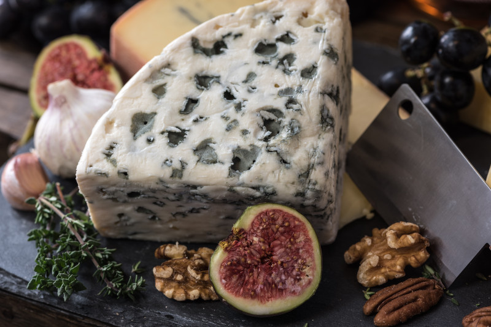

Сир з пліснявою: про смак та безпеку
Процес приготування сирів з пліснявою заслуговує на написання окремого пригодницького роману і може відбуватися ну справді дуже по-різному. І тут зустрічаються доволі екзотичні прийоми! Ну, наприклад, визрівання деяких сирів може відбуватися у резервуарах, закопаних у землю, чи в печерах, і саме вулканічного походження. Власне, тут згодиться все, що наближує умови до необхідних – щоб "правильній" плісняві жилося гарно та комфортно.
Три основні процеси залучено у виробництві таких сирів: ферментаця молочного цукр у (лактози) до молочної кислоти, гідроліз молочного жиру до жирних кислот та ступінчастий протеоліз: молочний білок казеїн розвалюється на пептиди (короткі ланцюжки амінокислот), а далі на амінокислоти. Саме жирні кислоти та амінокислоти стають попередниками тих речовин, які спричинюють запах та смак визрілого сиру.
Не можемо втриматися від приємності навести деякі красиві подробиці. Гіркий присмак сирів спричинює якраз не прогіркання жиру, а частковий протеоліз: коли накопичуються його проміжні продукти, а саме пептиди. Саме деякі пептиди (а якщо хочете ще більших подробиць – ті, у яких багато проліну, на N-кінці молекули – аргінін чи лізин, а також вищий загальний вміст гідрофобних амінокислот) мають гіркіший смак.
Їм чудово дає раду грибочок Geotrichum candidum, що завдяки своїм ферментативним умінням є бажаним гостем багатьох стартерних культур для виробницва сирів із пліснявою.
Цей мікроскопічний гриб не лише розщеплює ті гіркі пептиди, а й проявляє антагоністичну дію по відношенню до деяких патогенів, у тому числі, лістерії та мукора. А якщо на шляху цього геотрихума трапляється чимало сірковмісних амінокислот, наприклад, метіонін, то матимем запах та присмак часнику чи капусти.
Чи є в блакитних сирах антибіотики?
Не зважаючи на гучну назву Penicillium, антибіотики може продукувати не так вже й багато видів грибів цього роду. Власне отой відомий і життєдайний пеніцилін отримують із грибів виду P. chrysogenum. Окрім нього, гени синтезу пеніциліну знайдено ще у P. nalgiovense та P. griseofulvum.
Для виробництва сирів із пліснявою використовуються інші пеніцили – P. camemberti, P. roqueforti, P. candidum. У них ні антибіотиків, ні генів, що могли б їх потенційно кодувати, немає.
А токсини?
Однак пліснява є пліснява, і їй важко позбавитися поганих звичок синтезувати хоч трохи якоїсь отрути. Ну наприклад,P. roqueforti може утворювати ряд мікотоксинчиків, однак їх кількість в сирі – мізерна.
А ті токсини, які синтезуються у вищих кількостях (наприклад, PR токсин), довго не живуть та розкладаються, поки сир визріває.
Однак, із цієї точки зору, варто бути обережними при вживанні "надто аутентичних" сирів і все таки надавати перевагу виробництвам, де працюють із бактеріальними заквасками. Бо "скисло само" і "дозріло, тим, що насипалося із стелі якоїсь печери" – не завжди гарантія безпеки. Цілком ймовірно, що якісь дикі штами плісняви можуть продукувати більше токсинів.
А інші біологічні небезпеки?
Сири із пліснявою відносяться до так званої групи м'яких сирів. А це значить, що відносна вологість такого продукту є сприятливою для розвитку бактерій. А братися їм є ой звідки!
По-перше, частина таких сирів може вироблятися із сирого молока. CDC авторитетно попереджає нас, що ризик захворіти на лістеріоз чи не в півтори сотні раз вищий при вживанні отих м'яких сирів із непастеризованого молока.
Однак дослідники звертають увагу, що і пастеризоване молоко – ще не стовідсоткова гарантія відсутності лістерій, бо іноді виробництво таких сирів, м'яко кажучи, не надто стерильне. Лістерії можуть контамінувати сир на етапі визрівання і вони чудово живуть при низьких температурах та терпляче витримують ті 60 днів визрівання сиру.
А чи є користь?
Блакитні сири – чудовий делікатес. Про прямо користь їх вживання говорити трохи важко, однак існує думка, що із їх споживанням може бути пов'язана деяка протективна дія по відношенню до серцево-судинної системи. Деякі метаболіти P. roqueforti можуть сприяти зниженню рівню холестерину.
Отож підіб'ємо невеличкі підсумки.
Сири з пліснявою: правила безпеки
Це безумовно смачно і надихаюче! Але, як завше, трохи занудно – головне не перестаратися.
- Бо в них чимало солі, а її надлишок, як відомо, до добра не доведе;
- Пам'ятаємо про лістеріоз, сальмонельоз та інші ризики м'яких сирів. Відмовляємося від них взагалі у випадку вагітності, імунодефіцитних станів. Небажано їх пропонувати маленьким дітям та людям зовсім похилого віку.
- Стараємося обирати сир, приготований із пастеризованого молока.
- Варто оцінювати ризики при купівлі всіляких екзотичних сирів та від мало відомих виробників.
Трохи комічне питання: як зрозуміти, що сир з пліснявою таки зіпсувався?
Звертаємо увагу на колір плісняви. Вона має бути більш-менш однорідною та відповідно до виду сиру. Якщо на зеленій плісняві проступає рожева, чи на білій помаранчева, таке їсти не варто. Утриматися від споживання сиру потрібно і якщо має місце зміна консистенції продукту, з'являється слиз чи плями, або ж різкий запах аміаку.
